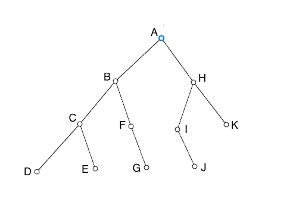
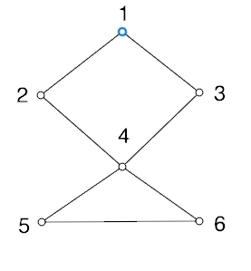
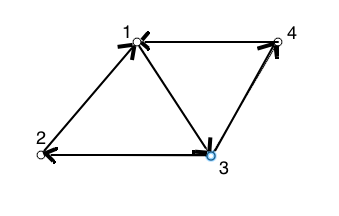

- Θ(n2)
- Θ(n2 log n)
- Θ(n0.51) *
- the master theorem can't be applied here.
- a straightforward recursive solution.
- dynamic programming.
- a memoized recursive algorithm.
- a greedy algorithm. *
- O(h2) time.
- O(ln h) time.
- O(h) time. *
- O(lg h) time.

Will cover the nodes in what order?
- A-C-B-H-E-F-I-K-G-J-D
- A-B-H-C-F-I-K-D-E-G-J
- A-B-C-D-E-F-G-H-I-J-K
- A-B-C-H-F-I-K-D-E-G-J
- for all nodes higher in the tree than x, x.key ≤ y.key.
- for all nodes in the left subtree of x, y.key ≤ x.key. *
- for all nodes lower in the tree than x, x.key ≤ y.key.
- all nodes in the right subtree of x will be the successors of x.
- Θ(n-2)
- Θ(n-2 log n)
- Θ(8n)
- the master theorem can't be applied here. *
- O(n3)
- O((1.02)n) *
- O(n5)
- O(500n log n)
- independence. *
- connectivity.
- resilience.
- linearity.
| Symbol | Frequency |
|---|---|
| A | 24 |
| B | 12 |
| C | 10 |
| D | 8 |
| E | 8 |
Which of the following is a possible Huffman coding for the string "ABBCDAED"?
- 11111101011100111110
- 11001001011100111110
- 01001001011100111110 *
- 11001001011100111110
- a straightforward recursive solution.
- dynamic programming. *
- a merge sort.
- a greedy algorithm.
- Θ(n2) *
- Θ(n2 log n)
- Θ(cn)
- the master theorem can't be applied here.
In what circumstances might we want to choose the O(n) algorithm?
- The algorithm will be distirbuted across a network.
- We believe our program will always be dealing with a number of records less than 2500. *
- We are running on a slow CPU.
- If n is very large.
- recursions and function calls.
- exponential factors.
- floors, ceilings, and boundary conditions. *
- any n raised to a power less than 3.
- We insert data into the tree as it comes along to us.
- The data has been randomly shuffled.
- A user types in the data from a sorted list. *
- All of the above.
- dynamic programming *
- a recursive algorithm
- a recursive algorithm with memoization
- a greedy algorithm
- necessary running time.
- best-case running time.
- expected running time. *
- unbounded running time.
- O(n!)
- O(n3) *
- O(n4)
- O((1.02)n)
- components of a directed graph that can each be reached from each other. *
- components in a weighted graph where the connections have the highest weights.
- components of a spanning tree.
- an vertices with edges between them.
- lg n
- lg* n *
- ln n
- log10 n
- must depend on many over-lapping sub-problems.
- must not depend on any future choices. *
- must be dependent on a global optimal.
- must only be available after considering all sub-problems.
- it is a function we know little about.
- it is asymptotically bound from above and below.
- only that it is asymptotically bound from below. *
- only that it is asymptotically bound from above.
- actual running time in nanoseconds.
- the number of disk operations.
- the number of basic operations. *
- CPU time used.
we often use a proof technique called:
- cut-and-paste. *
- the master theorem.
- substitution.
- recursion-tree analysis.
- inserts are faster.
- there are fewer pointers to maintain.
- we can back up as well as go forward in the list. *
- less memory is used.
- a simple recursive solution.
- a recursive solution with memoization. *
- a brute-force solution.
- all of the above.
- the mean of all possible values.
- an algorithm.
- a precise real number value.
- a function. *
- substitute a different recurrence for the one characterizing our algorithm.
- guess a solution and then use induction to prove it.
- substitute a polynomial factor for an exponential one.
- substitute an n2 wherever we see a 2n

What closed form best characterizes this tree?
- O(n/8)
- O(n log n)
- O(n2)
- O(log n)
- the input comes in sorted already.
- all inputs hash to different values.
- the input is purely random.
- all inputs hash to the same value. *

What is the solution to this recurrence?
- T(n) = Θ(n3)
- T(n) = Θ(n2)
- T(n) = Θ(n8)
- T(n) = Θ(n8/3)
- always choose the faster algorithm.
- always choose the simpler algorithm.
- consider how big your input is likely to be before choosing either algorithm.
- ask your boss what to do.
- a forest with no edges.
- a cyclical graph with no forests.
- any walk on a graph.
- a connected graph with no cycles.
- task management.
- map coloring.
- cellular telephone networks.
- all of the above.
- the code is extremely complex.
- clusters of keys will build up in a linked list.
- the hash table clusters around its central value.
- once inputs start to cluster in one area of the hash table, they will become more likely to do so. *

Which of the following would be an adjacency list representation of this graph?
- 1 (2, 3, 4) 2 (1, 4) 3 (1, 4) 4 (2, 3, 5) 5 (4, 6) 6 (4, 5)
- 1 (2, 3) 2 (1, 4) 3 (1, 4) 4 (2, 5, 6) 5 (4, 6) 6 (4, 5)
- 1 (2, 3) 2 (1, 4) 3 (1, 4) 4 (2, 3, 5, 6) 5 (4, 6) 6 (4, 5)
- 1 (2, 3) 2 (1, 4) 3 (1, 4) 4 (1, 3, 5, 6) 5 (4, 6) 6 (4, 5)
which of the following would be an adjacency matrix representation of this graph?
-
0 1 1 0 0 0 1 0 0 1 0 0 1 0 0 1 0 0 0 1 1 0 1 1 0 0 0 1 0 1 0 0 0 1 1 0 -
0 1 0 0 0 0 1 0 0 1 0 0 1 0 0 1 0 0 0 1 1 1 1 1 0 0 0 1 0 1 0 0 0 1 1 0 -
0 1 1 0 0 0 1 0 0 1 0 0 1 0 0 1 0 1 0 1 1 0 1 1 0 0 1 1 0 1 0 0 0 1 1 0 -
0 1 1 0 0 0 1 0 0 1 0 0 0 0 0 1 0 0 0 1 1 0 1 1 0 0 0 1 0 1 1 0 0 1 1 0
- amount of disk-memory communication
- number of processors used
- amount of network bandwith used
- all of the above *
- it is smaller.
- it allows quicker searches for determining whether some edge exists. *
- it can represent weighted graphs.
- it can represent directed graphs.

-
0 0 1 0 0 1 1 0 0 1 1 0 0 0 1 0 -
0 1 1 0 0 1 1 0 0 1 1 0 0 1 1 0 -
0 0 1 0 1 0 0 0 0 1 1 0 1 0 0 1 -
0 0 1 0 1 0 0 0 0 1 0 1 1 0 0 0
Will cover the nodes in what order?
- A-B-C-D-E-F-G-H-I-J-K
- A-C-B-H-E-F-I-K-G-J-D
- A-B-H-C-F-I-K-D-E-G-J *
- A-B-C-H-F-I-K-D-E-G-J
- a function we know little about.
- asymptotically bound from above and below. *
- asymptotically bound from below only.
- asymptotically bound from above only.
T(n) = 3T(n/3) + n/2 is:
- Θ(n/3)
- Θ(n log n) *
- Θ(n)
- the master theorem can't be applied here.
- the recursive solution is hard to grasp.
- all of the sub-problems are completely independent of each other.
- the recursion goes beyond 4 levels.
- the same sub-problems must be solved multiple times. *
- the number of keys is small. *
- we don't care how slow lookups will be.
- we aren't worried about the large number of collisions hashing will produce.
- linear probing is appropriate.
- we need to consider the global situation when making any choice.
- there is extensive over-lap among sub-problems.
- only the locally best choice matters. *
- greed is the goal of the algorithm choice.
- a rod-cutting problem.
- a minimum-spanning-tree problem.
- a matrix-parenthisization problem.
- a shortest-path problem.
- g dominates f asymptotically
- f is bounded below by g asymptotically
- f is bounded above by g asymptotically
- f dominates g asymptotically *
T(n) = 64T(n/8) - n2 log n is:
- Θ(n2)
- Θ(n4 log n)
- Θ(n2 log n)
- the master theorem can't be applied here.
- θ(n2)
- θ(n) *
- θ(lg n)
- θ(1)
- breadth-first search.
- finding the minimum spanning tree.
- depth-first search.
- finding the shortest path.